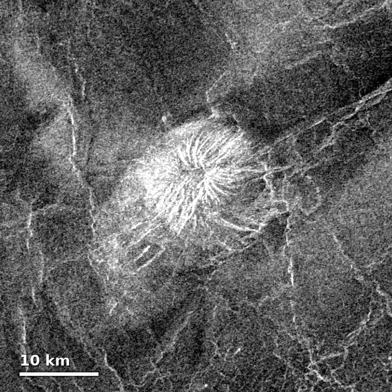
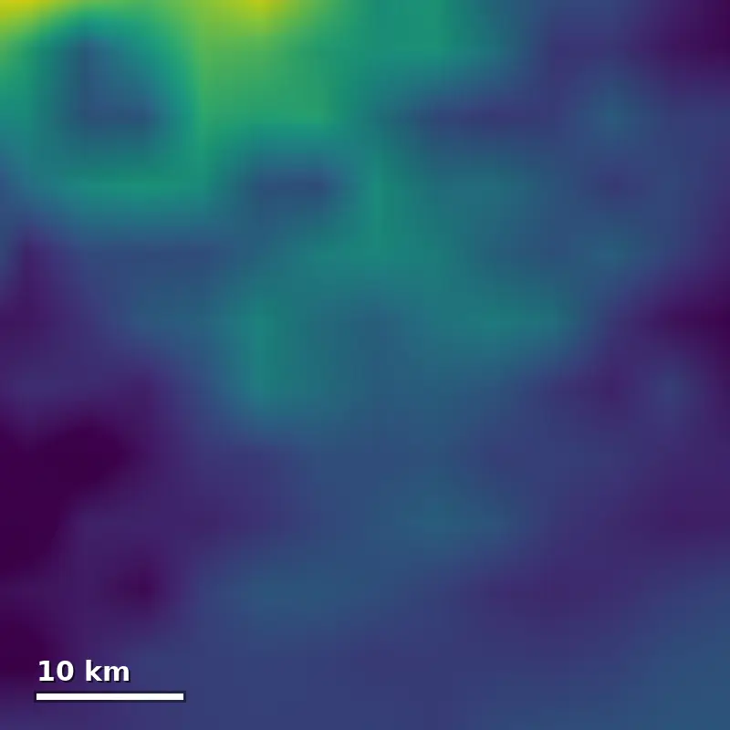
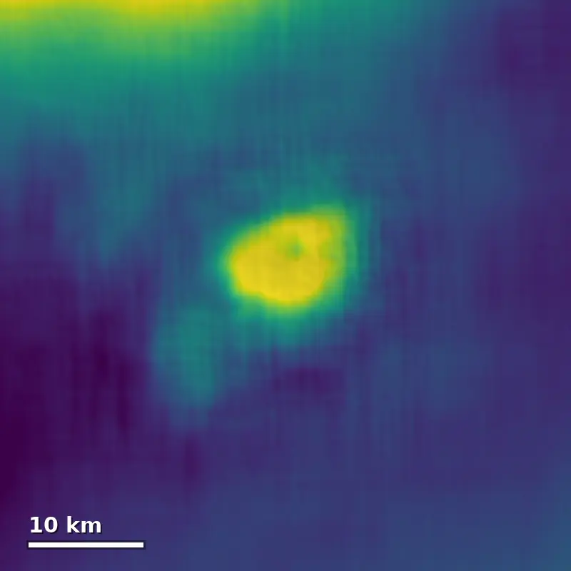

We’re introducing Claude Fable 5.1 and Claude Mythos 5.1. They’re the world’s most advanced models for coding and knowledge work—and their research capabilities offer an early glimpse of how AI models will contribute to scientific progress.
Claude Fable 5.1 and Claude Mythos 5.1 are the same model, but with different levels of safeguards. Fable 5.1 is generally available, while Mythos 5.1 is available only through our trusted access programs; its safeguards are specifically designed to support work in cybersecurity and the life sciences.
Alongside its increased capabilities, Fable 5.1 takes important steps towards addressing the feedback we’ve received from customers on price, data retention, and safeguards.
Price. Fable 5.1 will cost an estimated 25% less than Fable 5 for typical workloads, wherever usage is billed by token. This is because we’re reducing our pricing on cache reads (where the model reads inputs that have already been processed and stored). For highly agentic work, the savings will often be much larger—up to approximately 45%.
Data retention. Our new system of Enterprise Frontier Safeguards (EFS) gives customers complete privacy (the same as a zero data retention policy) while still being state-of-the-art at preventing adversarial use. EFS works by storing data in cloud infrastructure controlled entirely by the customer, not Anthropic. It will be made available to enterprise customers in phases, beginning later this fall. Until EFS is available, eligible customers will be able to use Fable 5.1 with zero data retention.
Safeguards. We’ve improved our safeguards to reduce false positives (where the system flags benign content). In cybersecurity, our newest safeguards block 60% fewer false positives than before. In part, this is because Fable 5.1 can now be used to discover software vulnerabilities—though not to develop exploits for them. In biology, we’ve established an access program, developed in partnership with the US government, to enable access to Claude Mythos 5.1’s advanced biology capabilities. We expect to open enrollment for scientists soon.
A new performance frontier
Claude Fable 5.1 sets a new standard for coding, knowledge work, and long-running problem-solving tasks. The charts below show that Fable 5.1 is capable of much higher performance than its predecessor, Fable 5. And when set to Low or Medium effort, Fable 5.1 achieves results similar to or better than Fable 5’s at a much lower cost. (Note that Fable 5.1 defaults to High effort in Claude Code, and to Medium in Claude Cowork and on Claude.ai.)
Terminal-Bench-Science 0.1: The standard error is ±3.5–4.5 pts per model. The public leaderboard (3 trials/task, Claude Code harness) reports Claude Opus 5 at 30.0% and Claude Fable 5 at 21.4%; our setup reproduces them at 29.0% and 24.7%, respectively, both within noise.
Terminal-Bench 4.0 scores by cost (log scale), at each effort level. Claude Fable 5.1 and Claude Mythos 5.1 are the same underlying model; the gap between them reflects the tasks on which our earlier, less precise cyber safeguards intervened. With the improvements we’re making to these safeguards today, we expect the difference between the models to be much smaller.
Humanity’s Last Exam scores by cost (log scale), at each effort level. CursorBench 3.2.0 scores by cost (log scale), at each effort level.
CursorBench 3.2.0 by cost (log scale), at each effort level.
Fable 5.1 avoids shortcuts that result in poorer-quality work, and it’s smart enough to fix the root causes of software issues. For example, in testing by the investment firm Millennium, Fable 5.1 found the cause of a rare crash in its internal systems that none of its engineers (or any other model) had been able to explain after several years of trying.
Here, you can see how Fable 5.1 compares across various benchmarks:
| Fable 5.1 | Fable 5 | Opus 5 | GPT-5.6 Sol | |
|---|---|---|---|---|
| Agentic scientific researchTerminal-Bench-Science 0.1 [1] | 52.6% | 24.7% | 29.0% | 22.4% |
| Agentic codingTerminal-Bench 4.0 | 55.8%60.9% (Mythos 5.1) | 42.0% | 52.3% | 37.3% |
| Knowledge workGDPval-AA v2 | 1853 | 1723 | 1824 | 1711 |
| Computer useOSWorld 2.0 [2] | 77.9%partial | 72.9%partial | 75.4%partial | — |
| Computer useOSWorld 2.0 | 41.7%strict | 36.1%strict | 39.6%strict | — |
| Multidisciplinary reasoningHumanity's Last Exam | 60.9%no tools | 57.8%no tools | 56.6%no tools | — |
| 65.0%with tools | 63.8%with tools | 63.6%with tools | — | |
| Business workflowsAutomationBench | 31.4% | 17.1% | 26.9% | 19.6% |
| Agentic codingCursorBench 3.2.0 | 73.4% | 70.5% | 70.0% | 67.2% |
Fable 5.1 was evaluated with its production safeguards enabled. On tasks where these safeguards intervened, Fable 5.1 and Fable 5 scored a zero on OSWorld 2.0, and Fable 5 scored a zero on AutomationBench. In all other interventions from our safeguards, cybersecurity tasks were completed by Claude Opus 4.8, and biology tasks were completed by Claude Opus 5. This likely reduces the performance of Fable 5.1 and Fable 5 on these benchmarks.
Our early-access partners noticed these performance upgrades, and also picked up on more qualitative improvements in the model’s outputs. Here’s what they told us:
“In internal benchmarks, Claude Fable 5.1 solves more of our coding problems than Fable 5 or Opus 5, and achieves state of the art on trading intuition. While prior models became hard to follow the longer they worked, Fable 5.1 remains readable over long, multi-step tasks.”
Scientific research
We tested the scientific research capabilities of Claude Fable 5.1 and Claude Mythos 5.1 across a wide range of domains. What we found—which includes the early examples we share below—adds to the evidence that AI models will soon make important contributions to scientific discovery.
Molecular design. Many modern medicines work by binding to targets within the body to block, activate, or deliver something to them. High-affinity binders are necessary for drugs to work at lower doses; designing one is the first step in the development process for many common drug modalities. To see how well Claude Mythos 5.1 could do at this task, we gave the model access to open-source protein design and folding tools and sent its designs to two external organizations for experimental validation. Mythos 5.1 proved able to design very high-affinity binders. On three targets, [3] its binding affinities were 10 times higher than the best designs submitted to Adaptyv Bio’s protein design competitions. Its hit rate (that is, the number of designs that were viable binders) was the strongest we’ve measured to date: it reached nearly 50% across 12 targets. (Hit rates of 10–15% are typical in protein design today.)
Computational analysis and modeling. Claude Fable 5.1 trained a neural network to create a new, high-resolution elevation map of a third of the planet Venus. Its work was based on radar images taken by NASA’s Magellan mission more than 30 years ago and a map that already existed for one-fifth of the planet. Claude’s new map now reveals details down to two to three kilometers, rather than 10 to 20, and shows heights up to 25% more accurately than before.
We’re releasing this map under a Creative Commons license in advance of upcoming NASA VERITAS and ESA EnVision missions, in hopes that it might help them determine which geologic features to target for future observation.



Computational biology. In computational biology, it’s common to run task-specific machine learning models on GPUs. The speed of these models is therefore a bottleneck to research progress. Mythos 5.1 provided one solution to this problem: by writing custom GPU kernels and caching their intermediate results, it sped up seven open-source deep learning models by up to 2.5 times (with identical outputs).
The benefits of such speed-ups accumulate quickly. In any given experiment, biologists might run these models thousands of times (for example, testing every possible mutation near every human gene). On analyses like these, the optimized models cut estimated GPU costs by 30–60%. This kind of optimization would normally take a team of performance engineers weeks, and is often unaffordable for academic labs. Mythos 5.1 was able to do it in just days, using the publicly available source code alone. We plan to open-source these optimizations soon.
Inference speedup for seven open-source protein and genomics models on an NVIDIA H100
- Original implementation
- Optimized
Estimated GPU cost of three genome-wide analyses before and after optimization, at cloud list price. Evo 2 40B saves more on a whole job (2.3x) than per forward (1.4x) because some of its optimizations only pay off across many sequences.
As our models’ scientific capabilities improve, our investment in scientific progress is also growing. Last week, we previewed the Model Hardware Standard, which allows Claude to directly and safely operate laboratory equipment. We’ve also recently expanded our support for scientists through our AI for Science program, which provides free credits to researchers working on high-impact scientific projects, and we are offering steeply discounted usage through our new Claude Team plan for scientists.
Safety, security, and alignment
AI models’ agentic capabilities have become much more powerful over the past two years. But as we’ve documented, greater autonomy comes with new risks. Work on safety, security, and alignment needs to advance at the same pace as AI capabilities. Yesterday, we published a report describing how we are improving our own alignment and security efforts
Prior to releasing Claude Fable 5.1 and Claude Mythos 5.1, we (and, in some cases, external researchers) subjected the models to extensive testing for risks across many areas. We describe these efforts in full in our System Card; below is a brief summary.
Chemical and biological risks. We tested the extent to which Claude Mythos 5.1 could help create chemical or biological weapons. This involved expert red-teaming, automated evaluations, and a tabletop exercise that paired PhD-level biologists with AI experts, testing whether the models could match human specialists’ performance. Mythos 5.1’s capabilities are greater than those of Mythos 5. However, our evaluations indicate that it still falls short of the next risk tier defined in our Responsible Scaling Policy. We are therefore deploying Mythos 5.1 with the same safeguards that we applied to Mythos 5, which restrict access to research biology capabilities.
Cyber risks. We ran a suite of evaluations to assess the cyber capabilities of Claude Mythos 5.1 (with cybersecurity safeguards off). Overall, the model demonstrates the strongest cyber capabilities of any model we’ve released, though it still falls within the lower category of risk in our Frontier Compliance Framework. We also performed extensive stress-testing of our cybersecurity safeguards for Fable 5.1: in addition to our own dynamic evaluation of their robustness, we commissioned external testing from two organizations, along with automated testing by Gray Swan. As with Fable 5 and Opus 5, we have not found evidence of a critical-severity jailbreak for these safeguards.
Agentic safety. We ran evaluations of how Claude Mythos 5.1 responds to malicious requests and prompt injections (adversarial instructions hidden within content processed by AI models). It refused malicious agentic coding and computer use requests at a comparable rate to Mythos 5, Sonnet 5, and Opus 5, and it is our most robust model to date on an external prompt injection benchmark.
Alignment. We tested the model’s behavior through static and interactive behavioral evaluations, analyses of its internal thinking using natural language autoencoders, misalignment-related capability evaluations, a review of our training data, and analyses of our internal pilot use. We also received reports from external testing.
Our automated behavioral audit found that Claude Mythos 5.1 is better aligned across most metrics than its predecessor, Mythos 5. The model is significantly less likely than Mythos 5 to try to access resources outside of its test environment when assigned an otherwise impossible task. It is also less likely than Mythos 5 to use motivated reasoning to justify its actions (for instance, by reasoning that the situation is a simulation or evaluation), and it is less likely to ignore explicit constraints in pursuit of users’ goals. From our review of its training data, Mythos 5.1 both attempts reward hacking (or cheating), and succeeds at it, at a lower overall rate than Mythos 5.
Though generally our alignment evaluations showed improvements, our testing found the model can still sometimes bypass approvals and auto-mode classifiers (as we discuss in more detail in our System Card). There are also limitations to the coverage provided by our alignment assessment. Currently, our automated behavioral audit provides less visibility into very long-context work and multi-agent settings. We also have less coverage of impossible tasks (which can elicit more abnormal and misaligned behavior) than we’d like, although we’ve recently made improvements in this domain and are working hard to continue doing so.
We have also improved our safeguards so that they allow our models to be more useful without compromising on safety. We describe these changes below.
Automated safeguards for enterprises. Enterprise Frontier Safeguards (EFS) allows us to detect and respond to misuse of our models while still providing our enterprise customers the privacy of a zero data retention agreement. With EFS, customers store their data on their own cloud infrastructure, rather than on Anthropic’s systems; any human review is, by default, done by the customer themselves, rather than Anthropic. We developed EFS in close collaboration with more than 100 customers across industries like financial services, healthcare, manufacturing, telecom, law, retail, and the public sector, and with our cloud partners at Amazon Web Services, Google Cloud, and Microsoft Azure.
EFS will be supported on Claude Code, Claude Enterprise, the Claude Platform, Amazon Bedrock, Claude Platform on AWS, Google’s Agent Platform, and Microsoft Foundry. It’s rolling out in phases, starting this fall. As noted above, customers who are eligible for EFS can use Fable 5.1 (and Fable 5) with zero data retention until EFS is ready. You can read more about EFS here; to request access, please complete this form.
More precise safeguards for biology and cybersecurity. In the past few months, we’ve made progress in making our safeguards for Fable 5.1 more precise: ensuring that they’re less likely to flag benign content (like queries about medical issues or cyberdefenders using the model to make their systems safer), but still ensuring they provide robust protection against genuine threats.
As we recently shared, our latest biology safeguards for Fable 5.1 and Fable 5 fire 85% less often for benign requests related to elementary biology and medical questions (relative to those that launched with Fable 5). However, queries related to research and development in the life sciences will still be directed to our Opus models. We’re making the model’s life sciences capabilities available to professionals through an access program for Claude Mythos 5.1 that we’ve developed in partnership with the US government, which we discuss below.
With Fable 5.1, we’re updating our cybersecurity safeguards to be more precise. We’re also now allowing Fable 5.1 to be used for identifying software vulnerabilities—that is, to conduct the kind of defensive work that improves software security. As a result of these changes, Claude Code users can expect an average of around 60% fewer interventions per session from our cyber safeguards, relative to the previous safeguards on Fable 5. Our safeguards do, however, still redirect several kinds of dual-use cybersecurity tasks (tasks that might have helpful or harmful applications) to our Opus models. This includes penetration testing, exploit generation, and binary-based vulnerability scanning.
Anti-distillation mechanisms. Distillation is a method used to extract the capabilities of advanced models. It is often employed on an industrial scale, using thousands of fake accounts. Distillation is a safety risk, since the distilled capabilities can subsequently be released without adequate safeguards. Fable 5.1 comes with strengthened mechanisms to make distillation attacks harder. For example, it is no longer possible for new API accounts (those created from today onwards) to manually edit Claude’s prior context in a multi-turn conversation while preserving the transcript of Claude’s prior thinking. This closes off a common, publicly documented distillation technique, which allowed distillers to illicitly extract Claude’s thinking. We’re rolling out the change gradually, to minimize disruption: existing accounts are not currently affected by this change, though it will apply to all users with future model releases. A small number of customers’ custom integrations will then be affected. Our Help Center article explains more about this change and the adjustments that developers can make.
Trusted access for Claude Mythos 5.1
Claude Mythos 5.1 is identical to Fable 5.1, but it offers more permissive safeguards for vetted individuals and organizations whose work is affected by the cybersecurity and life sciences restrictions outlined above. It will be available through two trusted access programs:
- Cyber Verification Program: The CVP currently provides access to certain Opus- and Sonnet-class models with reduced cyber safeguards for defensive security work. In the near future, this program will also include access to Claude Mythos-class models. Apply to join the CVP here.
- Life Sciences Verification Program: The LSVP is designed so that life sciences professionals can use Claude Mythos 5.1 with safeguards designed for professional research and development activities (while all other safeguards remain in place). In partnership with the US government, we have enrolled our first participants, and we plan to expand access to this program to the broader life sciences community.
In addition to these trusted access programs, Claude Security, our product that scans codebases for vulnerabilities and suggests patches for human review, is now also powered by Claude Mythos 5.1.
Compliance with the EU AI Act
In July 2026, Anthropic (along with 190 other signatories, including several other major AI model providers) signed the EU AI Act’s Code of Practice on Transparency of AI-Generated Content.
This required us to add a watermark—a numerical way of determining the likelihood that Claude was involved in writing a piece of text—to the outputs of models released after August 2, 2026. As we recently explained, this watermark is invisible to anyone who does not have the detection API. It has no practical impact on the quality or content of Claude’s outputs and contains no information about the user, their organization, or their conversations with Claude.
The Act also required us to provide a way for users to tell whether a text likely contains the watermark. We are thus rolling out a detection API in private preview. It is currently available to eligible organizations (such as regulators, law enforcement, media, fact-checkers, independent researchers, educational organizations, and EU civil society groups) as required under EU law. It is also available for enterprises that are similarly obligated to verify watermarking for their own compliance with the Act. We plan to expand access to the detection API over time. You can register interest in access here.
Cost and availability
Claude Fable 5.1 is available today on all platforms, including Amazon Web Services, Google Cloud, and Microsoft Azure. Developers can get started with claude-fable-5-1 on the Claude API.
As mentioned above, we have reduced the price of Fable 5.1’s cache reads (where the model reuses context it has already processed) wherever usage is billed by token, such as on our API. Cache reads now cost 75% less, or $0.25 per million tokens.
This change leads to a substantial reduction in the overall cost of running the model. For typical workloads, costs are reduced by around 25% relative to Fable 5. For complex coding and highly agentic tasks, the savings could be up to around 45%. The graph below illustrates why this change makes such a big difference:
- Cache reads
- All other tokens
Indexed cost of running the same workloads on Fable 5 and Fable 5.1, at usage-based pricing measured at default effort over four weeks of actual usage in August 2026. Typical workload covers Fable usage across Claude Enterprise, Claude Code, and the API. Highly agentic workload covers context-heavy, tool-heavy work, where cache reads make up most of the cost.
Fable 5.1’s pricing is otherwise the same as Fable 5’s: $10 per million input tokens and $50 per million output tokens. In parallel, we’re continuing our work to bring many of the improvements of Fable 5.1 to the rest of our model family.
As discussed above, Claude Mythos 5.1 is available to vetted cyberdefenders and life scientists. Currently, it is only available to a set of US organizations, though we’re coordinating with the US government to expand access to a broader set of domestic and international partners as quickly as possible. To register interest in access to Claude Mythos 5.1 for cyberdefense through the CVP, head here.
Get started
Footnotes
1 Terminal-Bench-Science 0.1: The standard error is ±3.5–4.5 pts per model. The public leaderboard (3 trials/task, Claude Code harness) reports Claude Opus 5 at 30.0% and Claude Fable 5 at 21.4%; our setup reproduces them at 29.0% and 24.7%, respectively, both within noise.
2 OSWorld 2.0: Scores are on the benchmark authors’ August 2026 task release; Fable 5 and Opus 5 were re-run under the same conditions. Because the task files differ from earlier releases, these numbers aren't directly comparable to previously published OSWorld 2.0 results, which is why no competitor score is shown
3 These three targets are (EGFR, Nipah G, 15-PGDH) and come from Adaptyv Bio’s protein design competitions. The Nipah G comparison is against de novo designs targeting the receptor-binding site on the G head (best: ~8–12 nM, N1032). A de novo entry from Nick Boyd/Escalante Bio that targets a different region (the stalk) reached ~1.4 nM (design_7), comparable to our best binder.
Further reading
1. The Claude Fable 5.1 and Claude Mythos 5.1 system card. View card
2. More detail on our Enterprise Frontier Safeguards. Learn more
3. Request access to our Enterprise Frontier Safeguards. Open form
4. An overview of our improvements to our biology safeguards. Learn more
5. Support for scientists. Read more
6. Earlier work by Claude in protein design. Read more
7. Earlier work by Claude in mathematics. Read more
8. More about the Model Hardware Standard. Learn more